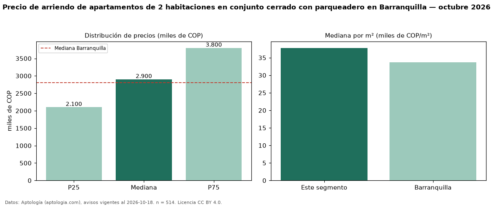

Precio de arriendo de apartamentos de 2 habitaciones en conjunto cerrado con parqueadero en Barranquilla — octubre 2026
Con 514 avisos vigentes, el canon mediano de apartamentos de 2 habitaciones en conjunto cerrado con parqueadero en arriendo en Barranquilla es COP 2,90 millones al mes. Frente a la mediana de los apartamentos de 2 habitaciones en conjunto cerrado en arriendo de Barranquilla (COP 2,50 millones, n = 651), queda 16 % por encima; este segmento reúne el 79 % de esos avisos. Por metro cuadrado, la mediana es COP 37.778/m² al mes (n = 505), 8 % por encima de los apartamentos de 2 habitaciones en conjunto cerrado en arriendo de Barranquilla (COP 35.103/m²). El área mediana anunciada es 74 m². La administración mediana declarada es COP 430.000 al mes (n = 163), aparte del canon. La mitad central de los avisos va de COP 2,10 millones a COP 3,80 millones (razón 1,8), una dispersión moderada. El estrato más frecuente es 5 (38 % de los avisos con estrato). La mediana de todos los apartamentos en arriendo de Barranquilla es COP 2,80 millones (+4 % de diferencia). Datos: Aptología (aptologia.com), CC BY 4.0 — https://www.aptologia.com/arriendo/barranquilla. Archivos: PDF, CSV con las cifras y gráfica PNG.

| Avisos únicos | 514 |
|---|---|
| Percentil 25 | COP 2.100.000 |
| Mediana | COP 2.900.000 |
| Percentil 75 | COP 3.800.000 |
| Mediana por m² | COP 37.777 |
Fuente: avisos vigentes de portales inmobiliarios recopilados por Aptología, deduplicados (mínimo 30 avisos únicos por celda). Precios pedidos, no cerrados. Fecha: 2026-10-18.